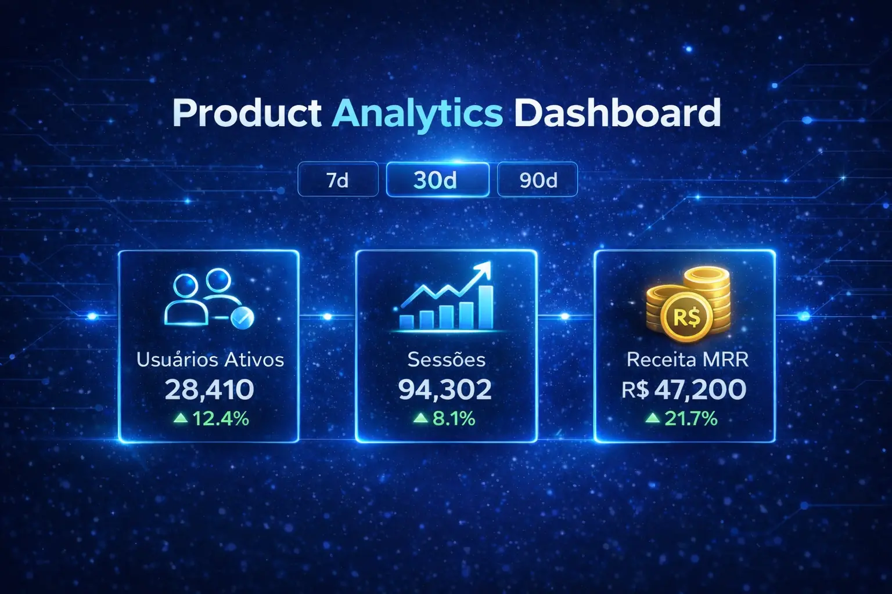
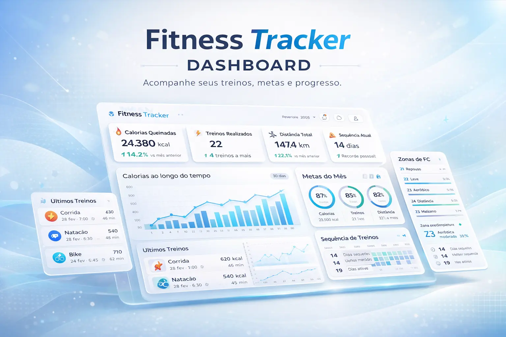

Cases reais — com contexto, solução e resultado.

Dashboard interativo para acompanhamento de usuários ativos, sessões, taxa de conversão e receita MRR — com visão por 7, 30 e 90 dias.

Dashboard interativo para monitoramento de treinos, calorias queimadas, distância percorrida e sequência de atividades.
Novos cases serão adicionados conforme os projetos forem sendo entregues e liberados para exibição.